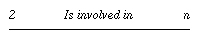
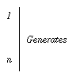
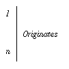
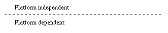
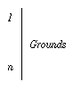
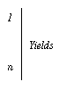

Not only all displayed marks from our lab are to be related to the exact combination of choices on data models, implementation of algorithms, platform configuration and tuning, etc. with which they have been obtained, but thinking of results share and comparison across labs cooperating for this project, there is an obvious need of agreement on a schema to present any collection of marks related to spatial join preformance measurement.
(As soon as you feel easy with this DB schema you can access the marks
directly in SQL !)
| Data Model |  | Test Model | |||
|  |  | Data Sample | Test Specification | ||
|  |  | ||||
| Test Implementation | |||||
|  | |||||
| Test Execution |
| Notations used in the suite of this document: | ||
| { ... } | - a set of ... | |
| [ X | Y | ... ] | - X or Y or ... | |
| X | - X is optional | |